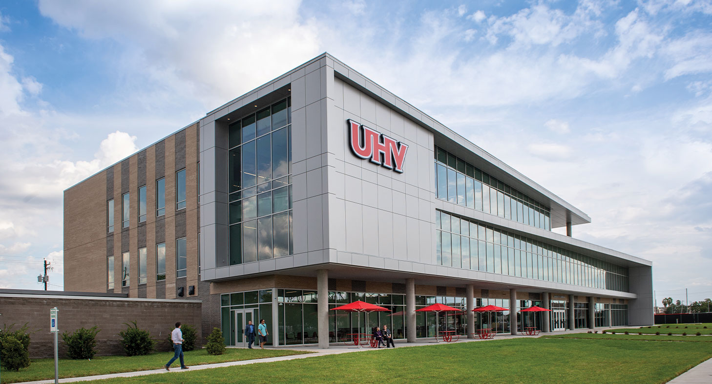

Hidayet Kaya
Contact Me
EDUCATION

Computer Science, B.S.
University Of Houston | Houston, TX
EXPERIENCE
Information Technology Intern
Harmony Public Schools | Houston, TX Aug 2020 - Jan 2022
Worked with the IT technician on providing all necessary technology equipment to the
entire staff.
Helped department set up equipment for meetings, events, and operations.
Maintained inventory records and documentation for equipment in database.
Analyzed current information and helped develop plans to address needs.
Presented database information and project updates to upper management.
SKILLS
Critical Thinking
Problem Solving
Team Communication